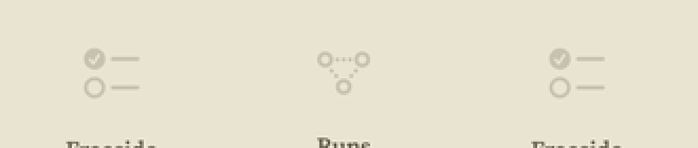

uploads/Freeside-UX-Review-assets/macOS-states.png): the empty Inbox detail used checklist, the empty Runs detail point.3.connected.trianglepath.dotted. The 8 Oct canvas takes archivebox for Inbox for now and keeps checklist on Tasks; the August three-points glyph is recorded here only. The tray below was never Freeside’s — it was the survey’s drawing of the generic system view.tray.